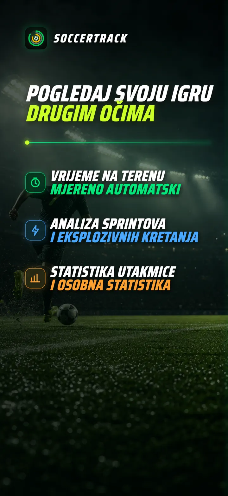
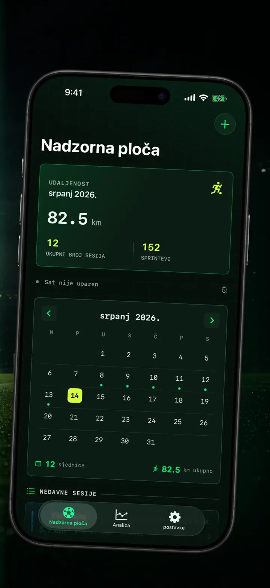
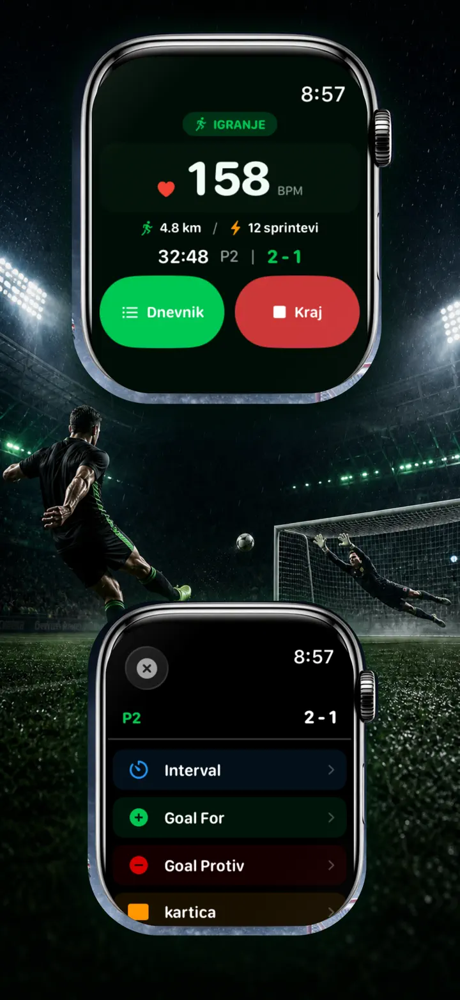
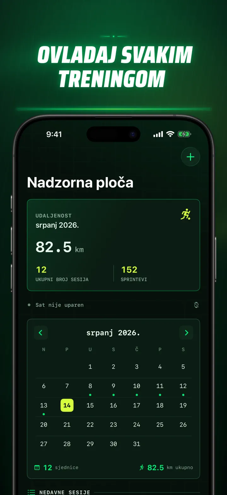
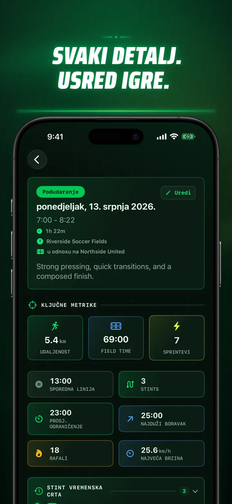
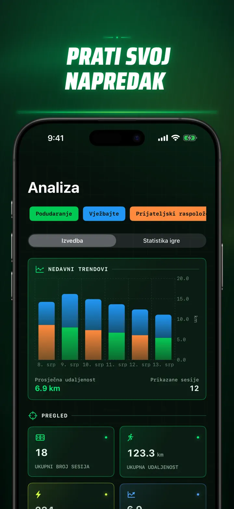
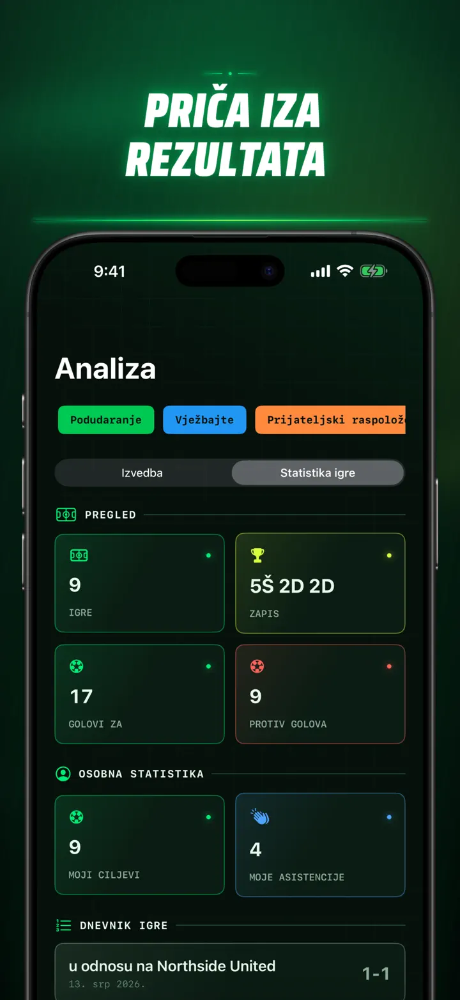
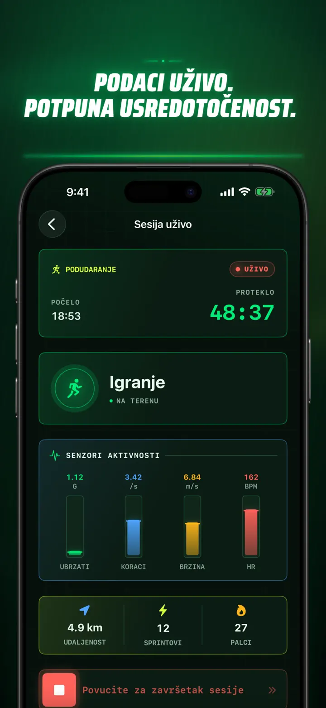
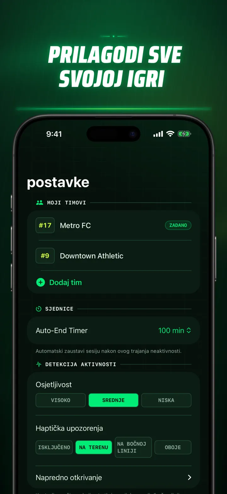
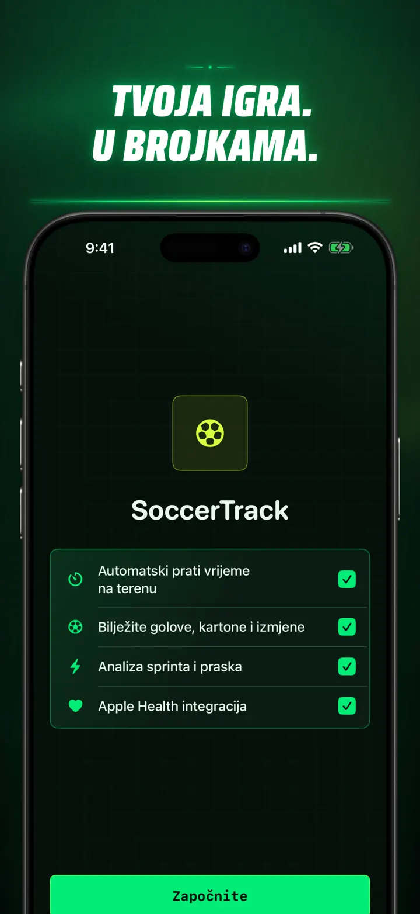

Soccer Time Track
Nogomet: vrijeme i analiza
Pokrenite sesiju i igrajte. Apple Watch automatski odvaja vrijeme na terenu i klupi te bilježi podatke uživo, sprintove, događaje i trendove.
Preuzmi na App Storeu
O aplikaciji
Pogledajte svoju utakmicu drukčije.
Soccer Time Track pretvara Apple Watch u pomoćnika za dan utakmice namijenjenog igračima koji žele znati više od konačnog rezultata. Pokrenite sesiju sa zapešća, usredotočite se na igru, a zatim na iPhoneu pregledajte detaljnu sliku svoje izvedbe.
AUTOMATSKO VRIJEME NA TERENU
Saznajte kada ste stvarno bili u igri. Signali kretanja, treninga i lokacije pomažu razlikovati aktivnu igru, nisku aktivnost i vrijeme na klupi. Dobivate:
- Vrijeme na terenu i klupi
- Dionice igre i jasnu vremensku crtu
- Detaljan pregled tijeka cijele sesije
UTAKMICA SA ZAPEŠĆA
Odaberite Utakmica, Trening, Prijateljska ili Ostalo. Tijekom igre zabilježite:
- Golove za i protiv
- Vlastite golove i asistencije
- Žute i crvene kartone
- Zamjene i promjene dijelova utakmice
VAŠA IGRA U BROJKAMA
Idite dalje od minuta uz podatke kao što su:
- Udaljenost
- Prosječna i najveća brzina
- Sprintovi i visokointenzivna ubrzanja
- Puls i aktivne kalorije
- Kadenca i ubrzanje
PODACI UŽIVO, POTPUNI FOKUS
Upareni iPhone može prikazivati mjerenja uživo dok Apple Watch nastavlja bilježiti trening. Vi ostajete usredotočeni na utakmicu, a podaci se stvaraju u pozadini.
PRATITE NAPREDAK
Čuvajte utakmice, treninge, prijateljske susrete i druge sesije u jednoj povijesti. Istražite trendove i osobne rekorde, usporedite izvedbe te dodajte momčad, broj dresa, protivnika, lokaciju i bilješke kako biste sačuvali priču svakog rezultata.
Trebate podatke drugdje? Izvezite sesije, dionice igre i događaje utakmice u CSV ili JSON formatu.
ZA APPLE WATCH I APPLE HEALTH
Uz vaše dopuštenje Soccer Time Track koristi podatke o treningu, pulsu, kretanju i lokaciji za izradu uvida te sprema završene nogometne treninge u Apple Health. Automatsko praćenje zahtijeva Apple Watch. Sesiju možete dodati i ručno na iPhoneu.
VAŠI PODACI, VAŠA UTAKMICA
Sesije ostaju na vašim uređajima i, kada je iCloud sinkronizacija uključena, u vašoj privatnoj iCloud bazi podataka. Soccer Time Track ne zahtijeva račun, ne prikazuje oglase i ne koristi analitiku trećih strana.
Prestanite nagađati koliko ste igrali. Pogledajte što ste napravili sa svojim vremenom.
Pravila privatnosti: https://masawata.net/SoccerTimeTrack/privacy-policy.html Uvjeti pružanja usluge: https://www.apple.com/legal/internet-services/itunes/dev/stdeula/
Snimke zaslona









Soccer Time Track
Pokrenite sesiju i igrajte. Apple Watch automatski odvaja vrijeme na terenu i klupi te bilježi podatke uživo, sprintove, događaje i trendove.
Preuzmi na App Storeu